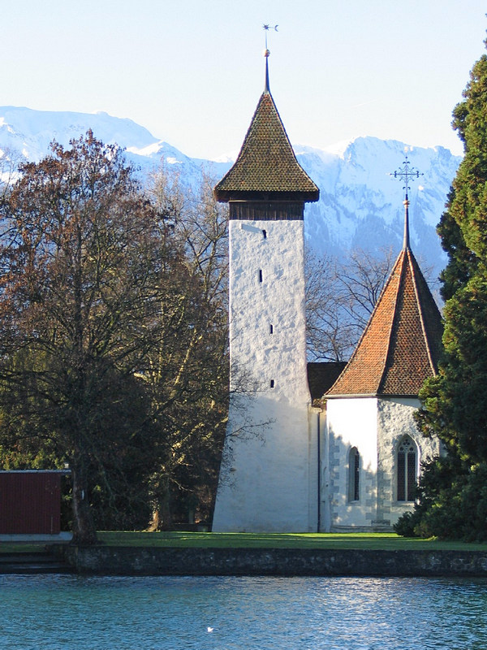
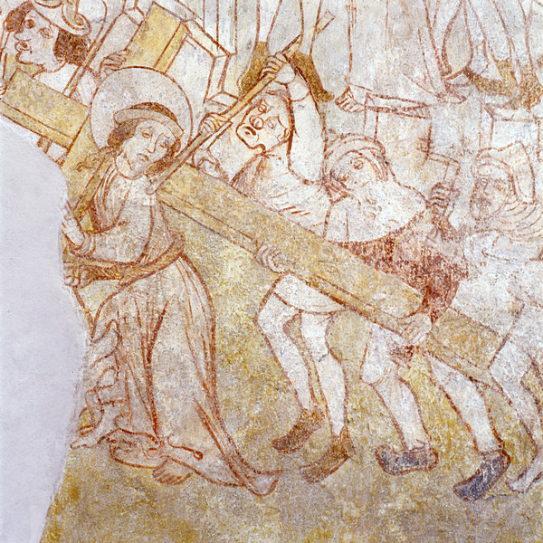

Die Kirche Scherzligen – ein faszinierender Ort, der viele Menschen berührt. Mit ihrem Charme und ihrer malerischen Lage am Wasser ist sie unzählige Male von Kupferstechern, Malern und Fotografen verewigt worden. Wer hier einkehrt, kann manches von dem erspüren, was heutige Menschen an „Orten der Kraft“ suchen. Und wer sich mit ihrer Geschichte beschäftigt, entdeckt bald, dass diese Kirche im Lauf der Jahrhunderte immer wieder neue geistige Strömungen früh aufgenommen und den Menschen zugänglich gemacht hat.
Früheste urkundliche Nennung und uralte Wurzeln
Ihre Erwähnung (zusammen mit Spiez) im Eddo-Testament (762) stellt die früheste Nennung einer Kirche im deutschsprachigen Kantonsteil Berns dar. Doch reichen ihre Wurzeln viel weiter zurück. Ein Doppelgrab mit angebauter Memoria (um 500) könnte die erste Kirche darstellen. Spezielle Lichtphänomene bei den Sonnenaufgängen am längsten Tag und am mittelalterlichen Patronatstag Maria Himmelfahrt lassen jedoch vermuten, dass die Kirche auf einem uralten Kultplatz erbaut worden ist und dass die Kirchenbauer bestrebt waren, die am Ort vorhandenen Kräfte alter Naturspiritualität in den Kirchenbau zu integrieren. So war sie wohl ursprünglich Johannes dem Täufer geweiht und wurde erst im ausgehenden Mittelalter zur damals bekannten Wallfahrtskirche „unserer lieben Frau zu Scherzlingen“ am Jakobsweg.
Kirche Scherzligen am Ausfluss des Thunersees (Foto: Hans Mischler, Thun)
Frühe Aufnahme lombardischer Romanik im Bau und des „weichen Stils“ in den Chormalereien
Gemäss der „Strättliger Chronik“ (nach 1464) gehört Scherzligen zu den zwölf Thunerseekirchen, welche im 10. Jh. durch König Rudolf von Hochburgund auf Grund eines Traums erbaut worden sein sollen. Historischer Kern dieser phantasievollen Ursprungslegende ist wohl die Tatsache, dass an den meisten jener Kirchen zur Zeit des hochburgundischen Königreichs Bautätigkeit im Stil der lombardischen Romanik festgestellt werden kann. Die Scherzligkirche wurde zudem mehrfach den neusten theologischen und liturgischen Erfordernissen angepasst (Errichtung und spätere Erhöhung von Chorschranken und Chortreppe, Einzug einer Chorscheidewand in der Folge entsprechender kirchlicher Synodebeschlüsse). Relativ spät erfolgte der grösste Umbau in der Geschichte der Scherzligkirche (um 1380). Die Errichtung des gotischen Hochchors und die bauliche Anpassung des Kirchenschiffs diente wohl der gründlichen Neupositionierung Scherzligens als Marienwallfahrtskirche. Für die Ausgestaltung der marianischen Wandmalereien im Chor wurde ein Meister herangezogen, der den allerneusten Malstil, den sogenannt „weichen Stil“, beherrschte.
Frühestes „Passionspanorama“
1469 erhielt „Peter, Maler von Bern“ den Auftrag, an der Südostwand der Kirche, in Richtung Jerusalem, ein monumentales Passionsbild anzubringen. Erstmals in der Geschichte wurden auf dem Hintergrund einer möglichst realistischen Darstellung des damaligen Jerusalem die Passionsereignisse in einem grossen Simultanbild mit 21 Szenen dargestellt. Zahlreiche Indizien deuten darauf hin, dass die Stiftung dieses Bildes vom bekannten Ritter Adrian von Bubenberg ausgegangen sein könnte. Bubenberg, Herr von Spiez und Strättligen, Besitzer der Schadau, Jerusalempilger, mehrmaliger Schultheiss von Bern und ein Freund von Bruder Klaus, teilte dessen Vorliebe für die Spiritualität der „Devotio moderna“. Das Wandbild soll denjenigen, die es betrachten, die Möglichkeit bieten, sich auch ohne Wallfahrt meditativ in das Geschehen der Passion einzuleben und so die persönliche „Nachfolge Christi“ zu vertiefen.
Kreuz-Träger (Ausschnitt aus dem Scherzliger Passionspanorama von 1469. Archiv der Denkmalpflege des Kantons Bern, Foto M. Beyeler, 2003)
Frühe reformatorische Predigt
Bereits vor 1520 predigte einige Zeit der Augustiner-Chorherr Johannes Haller als Leutpriester an der Kirche Scherzligen in reformatorischem Sinn. Er hatte während seines Studiums in Erfurt Martin Luther kennengelernt, später als „Lesemeister“ im Kloster Interlaken gewirkt (wo er zusammen mit Peter Kunz, dem späteren Reformator von Erlenbach, zur jüngeren, reformatorisch gesinnten Priestergeneration gehörte) und wechselte nach seiner Tätigkeit in Scherzligen 1520 als Pfarrer nach Amsoldingen. Bereits im Herbst 1521 liess er sich in einer Kirche in Zürich öffentlich trauen, was ihm schliesslich 1524 sein Amt als bernischer Pfarrer kostete. Er wirkte noch einige Jahre im Kanton Zürich als Verfechter der zwinglischen Reformation und fiel, wie Zwingli, in der Schlacht von Kappel.
Frühe „ökumenische“ Kirchennutzung im 19. Jh.
Nach der Reformation hatte die Stadt Thun letztlich keine Verwendung mehr für eine vorreformatorische Wallfahrtskirche, deren Marienspiritualität den ganzen Bau durchdrang. Sie schloss die Kirche und beorderte die bisherigen Kirchgenossen in die Stadtkirche. Nur auf Grund massiver Proteste der Strättliger wurde diesen eine reduzierte kirchliche Grundversorgung in Scherzligen gewährt. Die Kirche blieb jedoch jahrhundertelang ein Sorgenkind und musste mehrfach vor drohendem Zerfall gerettet werden. Die Errichtung der eidgenössischen Militärschule von 1819 brachte eine Wende. Für die Offiziere aus den katholischen Gebieten der Eidgenossenschaft wurde der Chor der Scherzligkirche für katholische Bedürfnisse umgebaut. Und die ebenfalls zugezogenen Protestanten aus den französischsprechenden Gebieten trafen sich im Kirchenschiff, welches durch eine Holzwand vom Chor abgetrennt worden war, zur Predigt der „Paroisse francaise“.
Frühe Entdeckung mittelalterlicher Wandmalereien
Bereits 1922 entdeckte Direktor Rudolf Wegeli vom Historischen Museum Bern im Schiff der Kirche unter dem reformatorischen Verputz die ersten mittelalterlichen Wandmalereien. Durch die Dissertation des jungen Kunsthistorikers Max Grütter wuchs der Bekanntheitsgrad von Scherzligen in interessierten Kreisen rasch. Die Auffindung der ursprünglichen Wandmalereien in Scherzligen wirkte wie eine Initialzündung zu vielen Wiederentdeckungen mittelalterlicher Bilderzyklen in bernischen Kirchen, die jahrhundertelang unter altem Verputz geschlummert hatten.
Frühes liturgisches Leben seit den Dreissigerjahren des 20. Jh.
Dieses Lebenszeichen vorreformatorischer Spiritualität fand auch auf liturgischer Ebene Wiederhall. Arthur Graf, seit Anfang der Dreissigerjahre Pfarrer an der Stadtkirche, nahm sich der vernachlässigten Scherzligkirche an. Mit Hilfe von Gönnern und Freunden aus der liturgischen Erneuerungsbewegung der Evangelischen Michaelsbruderschaft renovierte er den Chor und gestaltete ihn als Ort für liturgische Tagzeitengebete um. Trotz massiven Einspruchs des bernischen Synodalrats, der in den Dreissigerjahren solche Bemühung als nicht kompatibel mit reformiertem Gottesdienstverständnis verurteilte, behielten die liturgischen Feiern der Michaelsbruderschaft jahrzehntelang ihren Platz in Scherzligen und vermochten so das kirchliche Leben zu befruchten.
Seit Ende der Neunzigerjahre finden in Scherzligen regelmässig ökumenische Taizé-Abendgebete statt. 2003, im Jahr der gründlichen Restaurierung der Kirche, schuf die Kirchgemeinde Thun-Strättligen ein Schwerpunktpfarramt für Spiritualität. In der Folge wurde die Kirche Scherzligen, die bisher vor allem für Trauungen und Taufen bekannt war, zunehmend zu einem Ort für Menschen, welche Stille und Meditation, Jahreszeitenspiritualität und liturgische Feiern in ökumenischer Offenheit suchten. Die Tradition der ursprünglichen Scherzliger Patronatsfeste lebte wieder auf. „Johannifeiern“ und „Marienfeiern“ mit ihren entsprechenden Sonnenaufgangsfeiern und der Meditationsweg des „Adventsgartens“ bereichern seither den jährlichen Festkalender. Zunehmend besuchen auch Jakobspilger aus vielen Ländern die Kirche.
Scherzligen als „Early Adopter“ – auf der Suche nach Gründen
Scherzligen war nie eine normale Dorfkirche und lag deshalb immer etwas ausserhalb der gewöhnlichen Gemeindestrukturen. Im Mittelalter wurde sie von bedeutenden Gönnerinnen und Gönnern aus dem Adel protegiert und genoss als Wallfahrtskirche eine gewisse Sonderstellung. Dies und auch die Tatsache, dass sie seit der Reformation wie ein Fremdkörper immer etwas „quer“ in der protestantischen Kirchenlandschaft lag, förderte die Möglichkeit, dass sie als eine Art „Experimentierzone“ neue geistige und kulturelle Strömungen vielleicht etwas früher aufnehmen und zur Wirksamkeit bringen konnte, als andere Kirchen in der Umgebung. Die Kirche Scherzligen, mitsamt ihrem Areal, ist ein besonderer Ort der Inspiration. Wer sich auf sie einlässt, kann sich ihrer Ausstrahlung kaum entziehen.
Dr. Markus Nägeli ist pensionierter Pfarrer der Kirchgemeinde Thun-Strättligen und Leiter der Gruppe für Kirchenführungen an der Kirche Scherzligen.
Weitere Artikel von {{author.author}} finden Sie hier:
Zur Vertiefung:
- Michael Dähler, Die Kirche Scherzligen, Schweizerischer Kunstführer GSK, Bern 2004
- Markus Nägeli, "Lichtkirche Scherzligen".Zu den Scherzliger Lichtphänomenen um Johanni und Maria Himmelfahrt. 2017 (ergänzte Version April 2020)
- Markus Nägeli, Das Scherzliger Passionspanorama – Hintergründe und Bedeutung, 2017 (stark ergänzte Version April 2020)
- mit Anhang: Christoph Jungen,Jerusalem in Scherzligen - eine Entdeckung , Sommer 2017
- Weitere Materialien zur Vertiefung auf www.scherzligen.ch
- Das gesamte Passionspanorama findet sich hier
- SRF-Podcast über die Kirche Scherzligen und das Projekt theos